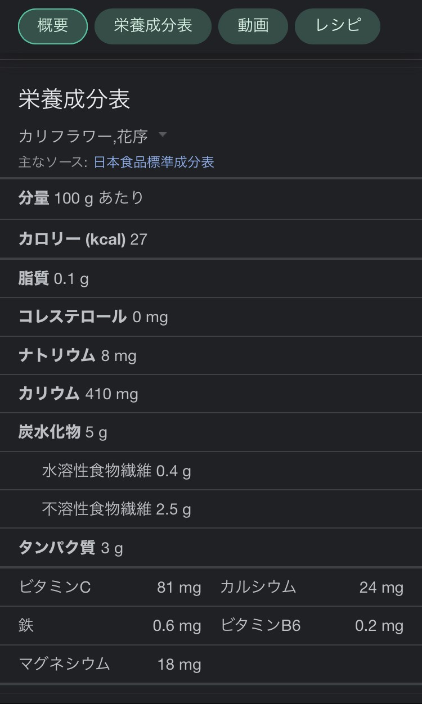
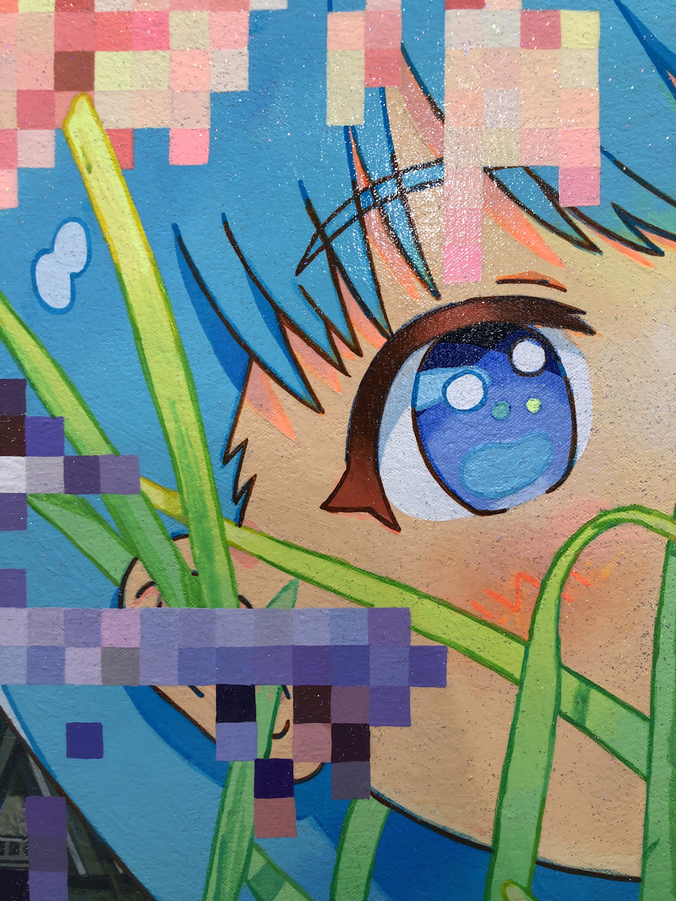
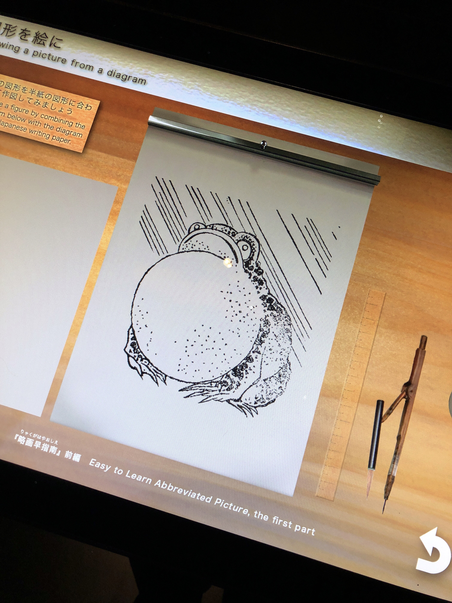
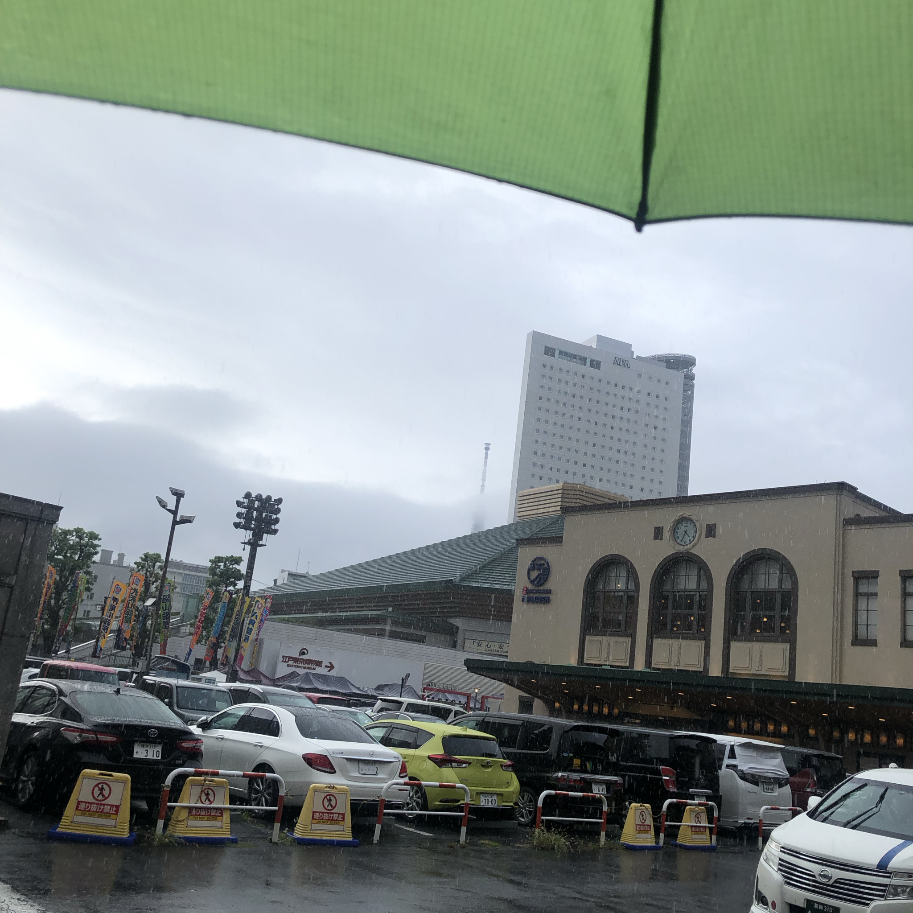
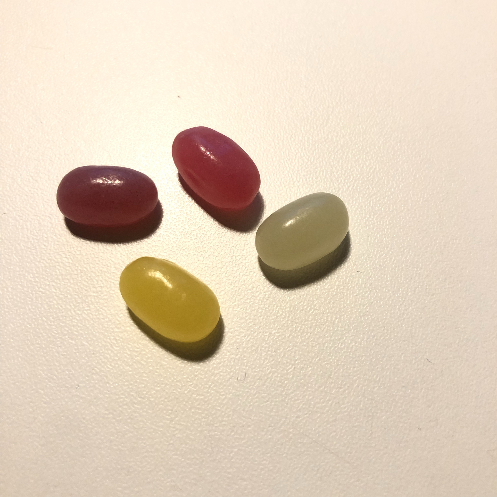

R409
9/4
音圧
楽しそうだった
羨ましい
みんなでバンドとかやるのちょっとあこがれる
自分も少しだけやったことあるけど
あー
何であれ誘ってくれる人たちありがたいから大切にしたい
話しかけてくれる人たちもありがたいから大切にしたい
うまく応対できないの悔しい
素っ気なくなってしまうのどうにかしたい
あー
がんばろう
9/5
ゆ 床屋に行ってちょきちょき髪を切って貰って終わったらお母さんが迎えに来てくれる。今日はどうしてか来ない。いつもは終わる少し前には来てくれているのに。終わって他の小さな子どもたちとおしゃべりしていると、急に知らないおばさんが近づいてきた。床屋の奥さんはその人に向かってごめんなさいお母さんおまたせしてしまってと言った。そしてその人はこちらに近づいてくる。まっくろな髪に大きな眼、目の周りが隈取りのように黒く落ち込んで見える。やっぱり全然知らないひと。でも床屋の奥さんもちいさな子どもたちも誰もこの人僕のお母さんでないことに気づかない。どうしようどうしよう、なんだか怖い。その人が近づいてきたので僕は後ずさる。床屋の奥さんに向かってあの、僕のおかあさんはまだですかと言った。すると知らないおばさんは急に僕の手を掴んだ。冷たく硬い手。それに力がすごく強い。いたい、いたい、いやだ。それは言った。何言ってるの、あなたのお母さんはここにいるでしょう、と。僕は最後の力を振り絞って言った。知らない！こんな人！！！
醒めた。
ロスマネコ、ロマネスコ
合法ロリっこDJアイドル

9/11
犬と散歩してたら似合いそうと言われてうれしい
何か似合うと言われてたしかに、と思うこと少ないから。
犬犬犬。
ビートを刻むベースうねるベースはねるベース。
Ho, hey ho! Ho hey ho!
かき氷食べたり線香花火したりしてない。
あー
夏はやり残したこと後悔するけど冬はそんなこと考えず早く過ぎろとしか思ってない
夏らしいこと
ひぐらしの聲を聞きながら自転車漕ぐくらいしかしてない
まだ少しだけ夏の残滓は残っている
小さい犬より中ー大くらいの犬がいいな、飼うなら。
全然モテないの女友だちが多いせいかもしれない。
好意的に見られることはしばしばあっても恋愛みたいに思われることほぼない。
女友だちが多くて恋人がいないってつまり自分には性的な魅力が無いってことなのかもしれない。
個人個人の性は離散的でなく連続的であるという気がここ数年しているしどこかで聞いた気もする。
勾配があって、その中を漂っているような感じがする。
実感。
まだSummer’s almost goneを繰り返し繰り返し聞いて感傷に浸る時期ではないか
9/14
あいさつしたらあいさつ返してくれない人割といるなー
かなし
自分から挨拶するのはまだ修行中だけれど、人から挨拶されたら必ず返すように努めている
あいさつ返してくれないとすごく悲しくなるのを知っているから
でもだからといって他人に強要するのもよくない
自分の価値観を押しつけてしまうといろいろよくない
こればっかりはしょうがない
一応社会的な最低限のコミュニケーションができているなら、それ以上を求めると言うのは酷というもの
でも少なくとも自分がすることは変わらなくて
とりあえずこちらから挨拶はしておくこと
そうすればやれることはやったという気になるので
あとは相手次第という風にしてしまえるので、
気が楽になる
少しだけ。
コミュニケーション大事
自分から、ということ。
がんばろう
それはそうとLINEのリアクションでできる白い顔のやつなんかムカつく
使っている人には別にムカつくこと全く無いのだが、この白いやつ
なんなんだ
何か別にどうでもいい世の中の謎なものごとに対して比較的理不尽に勝手に好き放題度を越さない程度になんか文句言うのって楽しい
人がしてるのを見たりして、くすっとなるのも好きだ
幸せな気分になる
うぱのぬいぐるみ胸に抱えながらpcするとなんか落ち着く。
ひとは手に入れ難いが、もの言わぬぬいぐるみなら簡単だし、何も文句を言わない。
キーボード換えてめちゃよし
デバイスオタクになりつつある
キーボード買ったばかりなのにすぐまた新しいマウスとか何か機械欲しくなって調べたりしている
vrのやつ欲しい
高い
9/15
よく自分は変態だ
変態だな、あー変態だと思うことがある
でもしょうがない
大丈夫、ルソーも変態だった
YouTubeの早口漫画広告
広告の品を宣伝するためだけに拵えられた謎ストーリーが謎過ぎるし前提条件の部分が旧時代的な価値観を思いきり引きずっていてむかつくしそれを大々的に宣伝してるところがもはや笑える
男目線でしかない謎の女性蔑視品定め発言を男とか女友だちからうっかり聞いてしまう
→
それを真に受けるだめだめ主人公女
→
私頑張らないと、でもどうすれば
→
ここで広告のコスメグッズ登場
→
やたら長い宣伝文句、売り文句(実際大したことない)
→
最後に今だけしかどうのこうのという消費者を煽るだけの無駄文句
→
コスメグッズを使っただめ主人公、なぜか超絶最強女に(絵が違う)
→
彼氏もできて女友だちにも褒められてサイコー(END)
..んなわけあるかい
共通していえるのは前提条件がおかしいところだ
9/22
カビゴンの進化
チンアナゴが2種類いる話
人間に興味が出てきた話
あたま痛い
コーヒーか酒飲むとあたま痛くなる
やはり毒なのか
水飲んで解毒しないと
がぶがぶ水飲んでがぶがぶ
友人二人があたりまえのように恋人いて何なのだと思う
おかしい
なんでだろう
今までの人生人に興味無さすぎたのがいけない
のか
仲よい女の子は何人かいるのに
基本的に向こうから近づいてきてくれる女の子としか今は仲よくしてないし自分からどうにかしようとした場合全て失敗してきたので結局今後もそういう人たちとしかうまくやっていけない気がする
別に女に限ったことでもないのか
数少ない友人の中で高校の女友だちの割合が感覚的に多い気がする
変な女の子ばっかりだ
でもそういう人たちが結局好きなのだなと思う
9/24
友人が最近やっているポッドキャストを聞いた。
自己表現の果てしない地平。
どこに行き何をすれば良いのか。
両国で宏美さんの個展を見た。
あのシリーズの意図が書いてあった。

絵画の意味は画家の意図したことと同一に捉えられる必要はなさそうだ
李禹煥の本を読んでいるとそんな気がする
ロボットが発達して画家の存在意義が問われている時代にもまだ希望はあるのかもしれない。
画家の内面を映す鏡としての絵画はもう死んだのか
というよりそれはもうロボットができるわけだから人間はやらなくてもいいのだろう

なんとなしに寄った北斎美術館よかった。
楽しかったし勉強になった
美術館というより博物館のようなエンターテインメント施設だった


知らない場所に行くのは極上の経験だ
ごくごく極上の経験。
ごくっごく。
ごっくごく。
両国駅で爆音でピアノ弾いてる人がいた
ショパンの別れのワルツみたいな名前の曲で好きな曲だった
けれど音でかすぎる
たぶんピアノ置いている位置がいけない
廊下みたいに細長い通路のど真ん中に置くものだから、反響しまくっていけない
なぜそこに置いたのだ
ピングドラムの冠葉くんが夏目さんと対峙する回を思い出した、少し。
たしかあのときは新世界より、の家路だった気がする。
爆音だけどいい曲よなあ
やさしく手を振ってさようなら
あるいは盛大な別れ
あるいは底なしの絶望。
ダンガンロンパ
日笠陽子さんの声えっちだなと思う
えっちだなというか、エロい
凛とした声を放ちつつも言葉尻を最後必ずすっとやさしく箸を置くように添えるのがすごく
好きだな
やっぱり澪だからか
苗木シンジくんもいい、
十神くんも、
モノクマえもん
学級裁判でみなさんと議論するうちに謎が解けていくのが気持ちいい。

ポイフル
ひさびさに食べたら昔のこと思い出した
小さいころ熱だしたときとかなぜかレモン味とかヨーグルト味とかのタブレット型のお菓子食べていた気がする
風邪だから慰みものみたいな感じでおばあちゃんが買ってきてくれたんだっけ
そのときもこのポイフルみたいな人工的な味がしてた
けれど好きで何かと食べていた
甘い人工的な工業生産的なお菓子食べるといろいろ昔のこと思いだして少しかなしいかもしれない
昔かなしいことがあったわけではなく、昔の記憶を呼び覚す行為に既に哀愁が含まれている
そういうもの
時の流れ
9/25
イメージを映す鏡としての作品はもう人間の証明として死んでいるようだ。
李禹煥はもう二十年も前にそのことを予見している。
シメジのイメージ。